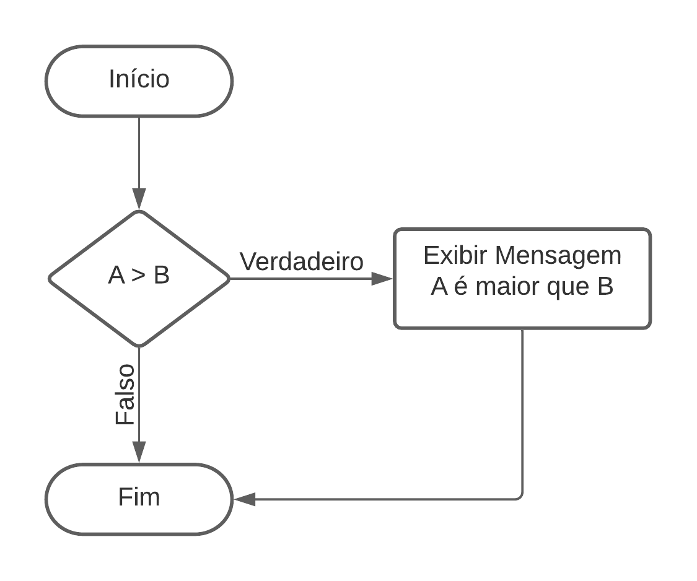
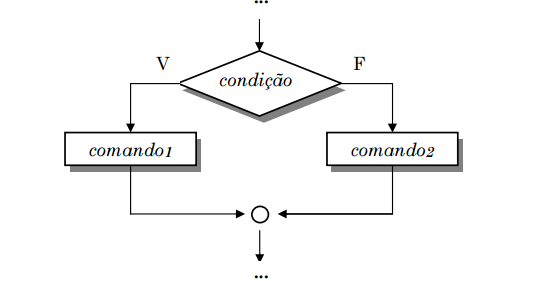
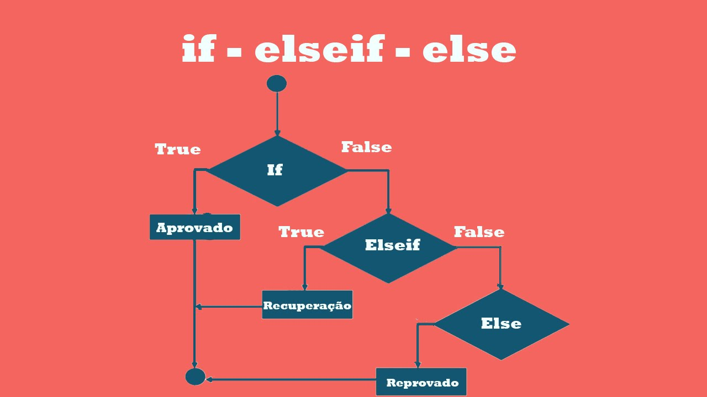

Estruturas de decisão
As estruturas de decisão como o próprio nome diz servem para que o programa tome uma decisão de executar ou não um bloco de código de acordo com um determinado parâmetro.
Na estrutura de decisão em python temos três comandos o IF, ELIF e ELSE que traduzindo ficaria SE, NÃSE (basicamente seria se, senão) e o senão que serão os responsáveis em tomar a decisão de entrar no bloco de comando caso atenda a condição, vamos ver alguns exemplos para entender melhor:
If (se)
Como podemos ver nessa estrutura o código se inicia depois disso e mostrado a seguinte condição:
se A > B então:
se a condição for verdadeira ou seja se A for maior que B o código entrará no IF e irá para o bloco onde ele mandará imprimir na nela a mensagem "A é maior que B", senão o código sai da estrutura e acaba já que nesse caso não temos o ELSEPara entendermos na prática vamos passar o fluxograma para o código em Python em sí
Caso verdadeiro:
A = 10
B = 5
if A > B
print( "A é
maior que B")
Resultado:
Caso falso:
A = 10
B = 20
if A > B:
print( "A é
maior que B")
Resultado:
Else (senão)
O else é utilizado sempre com o if pois ele criará outro bloco caso a condição seja falsa. para entender melhor o exemplo acima vamos exemplificar
se A > B então:
se a condição for verdadeira ou seja se A for maior que B o código entrará no IF e irá para o bloco onde ele mandará imprimir na nela a mensagem "A é maior que B", senão o código sai do if e entra no ELSE, printando na tela "A não é menor que B"Para entendermos na prática vamos passar o fluxograma para o código em Python em sí
A = 10
B = 20
if A > B:
print( "A é
maior que B")
else:
print( "A não é
maior que B")
Resultado:
ELIF (se senão)
No exemplo temos um aluno que tirou X nota, se a nota for igual ou maior que Y ele é aprovado, se senão ele vai para recuperação e soma a sua nota inicial se der maior ou igual a Y ele é aprovado, senão ele é reprovado.
exemplo na prática:
cor_semaforo = "vermelho"
if cor_semaforo == "verde":
print( "Pode
avançar, sinal verde!")
elif cor_semaforo == "amarelo":
print( "ATENÇÃO! o semáforo vai fechar.")
else:
print( "ATENÇÃO! o semáforo está vermelho, aguarde ele
abrir.")